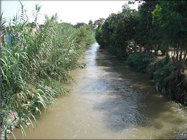

LA ACHIRANA DEL INCA

Construida durante la época del incanato en el Gobierno del Inca Pachacutec, tiene una antigüedad de más de 500 años, y según la leyenda fue hecho en honor a la doncella Chimbillaya de la localidad de Tate.
Cuentan que se construyó en 10 días con un ejército de 40,000 hombres. Tiene una extensión de 30 km. aproximadamente, cuyo recorrido empieza en el distrito de San José de Los Molinos, regando más de 11,000 hectáreas de cultivo. Se puede practicar canotaje desde noviembre hasta marzo.
En 1412 el Inca Pachacutec, acompañado de su hijo el príncipe imperial Yupanqui y de su hermano Capac-Yupanqui, emprendió la conquista del valle de Ica, cuyos habitantes, si bien de índole pacífica, no carecían de esfuerzos y elementos para la guerra. Comprendiolo así el sagaz monarca, y antes de recurrir a las armas propuso a los iqueños que se sometiesen a su paternal gobierno. Aviniéronse éstos de buen grado, y el inca y sus cuarenta mil guerreros fueron cordial y espléndidamente recibidos por los naturales.
El agua de la achirana del Inca suministra abundante riego a las haciendas que hoy se conocen con los nombres de Chabalina, Belén, San Jerónimo, Tacama, San liarán, Mercedes, Santa Bárbara, Chanchajaya, Santa Elena, Vista-alegre, Sáenz, Parcona, Tayamana, Pongo, Pueblo Nuevo, Sonumpe y, por fin, Tate.
Tal, según la tradición, es el origen de la achirana, voz que significa lo que corre limpiamente hacia lo que es hermoso.